R/trendAbundanceAssignment.R
trendAbundanceAssignment.RdCheck Trend in Abundance and Taxonomic Assignment
trendAbundanceAssignment(x, quantiles = seq(0, 95, by = 10), plot = TRUE)
| x | A phyloseq object |
|---|---|
| quantiles | Abundances values to sort. Can be changed to specify how many values in a distribution are above or below a certain limit. |
| plot | Logical. Default is TRUE. |
Either a list with data.frame and plot or just ggplot object.
Check if the more abundance-prevalent taxa have better taxonomic assignments. This is a pre-check, not corrected for differences in sequencing depth.
Thorsten Brach, 2018. MicrobiomeX2 Pipeline. GitHub. https://github.com/TBrach/MicrobiomeX2 https://github.com/TBrach/Dada_Pipel/blob/master/Generalized_Phyloseq_Analysis_New.Rmd
Sudarshan A. Shetty
library(biomeUtils) data("SprockettTHData") p1 <- trendAbundanceAssignment(SprockettTHData, quantiles = seq(0, 95, by = 5), plot=TRUE) p1 + ggplot2::scale_colour_brewer("", palette = "Spectral") + ggplot2::theme_minimal() + ggplot2::theme(axis.text.x = element_text(angle=90, vjust=0.5))